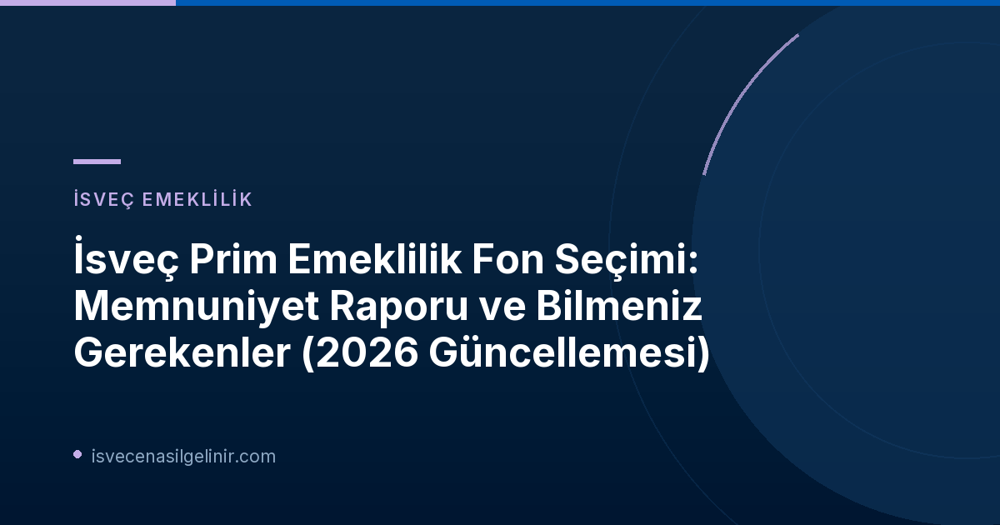

Pensionsmyndigheten'den Yeni Rapor: Fon Seçimindeki Memnuniyet Düzeyi
İsveç Emeklilik Kurumu (Pensionsmyndigheten), 16 Ekim 2026 tarihinde yayımladığı raporla, İsveçli emeklilik birikimi sahiplerinin prim emekliliği (premiepension) fon seçimlerine yönelik tutum ve memnuniyetlerini detaylı bir şekilde ortaya koydu. Raporun ana bulguları, çoğu kişinin fonlarını hiç değiştirmemesine rağmen, ihtiyaç duyduklarında yeterli desteğe sahip olduklarını düşündüğünü gösteriyor.
Raporun Ana Bulguları
- Emeklilik birikimi sahiplerinin çoğunluğu fonlarını hiçbir zaman değiştirmiyor.
- Fonlarını hiç değiştirmeyenler, istedikleri takdirde fon seçimi için yeterli desteğin bulunduğunu düşünüyor.
- Fon değişikliği yapanların yarısı, fond seçimi için yeterli destek aldığını belirtiyor.
- Daha bilinçli ve eğitimli tasarruf sahipleri, karar destek mekanizmalarına karşı genel olarak daha eleştirel yaklaşıyor.
Neden Çoğunluk Fon Değiştirmiyor?
Pensionsmyndigheten analistlerinden Gustav Sundén'e göre, çoğu kişinin fonlarını değiştirmemesinin nedeni, yardım eksikliği değil, başka sebeplerden kaynaklanıyor. Sundén, "Çoğu kişi fon değiştirmiyor ancak mevcut destekten genel olarak memnun. Bu, yardım eksikliği dışında başka nedenlerle fon değiştirmekten kaçındıklarını gösteriyor. Fon değiştirenler, genellikle en bilgili tasarruf sahipleri arasında yer alıyor ve bu kişiler, desteğin daha iyi olabileceğini düşünüyor," ifadelerini kullandı.
Detaylı Rapor Sonuçları ve Algılar
| Kategori | Algı | Oran |
|---|---|---|
| Fon değiştirmeyenler | Destek, iyi düşünülmüş fon seçimleri için yeterli. | Çoğunluk |
| Fon değiştirenler | Destek, iyi düşünülmüş fon seçimleri için yeterli. | Yaklaşık %50 |
| Fon seçimini onaylayanlar | AP7 Såfa dışına çıkıldığında daha fazla sorumluluk alındığını net bir şekilde gösteriyor. | %80'den fazlası |
| Fon seçimini onaylayanlar | Fon seçimi için yeterince iyi bir destek. | %40'ı |
| Kılavuz ve fon pazarını ziyaret edenler | Kılavuzun bilgi testini yaptığını belirtiyor. | Yaklaşık %25'i |
Premium Emeklilik Kılavuzu ve Bilinçli Kararlar
2024 yılında tanıtılan Premiepensionsguiden (Premium Emeklilik Kılavuzu), fon seçimi düşünenlere önemli bir kaynak sunuyor. Bu rehber, emeklilik sistemine genel bir bakış, riskin temel bilgileri, ücretlerin etkisi, sürdürülebilirlik konuları ve tasarruf sahibinin kendi bilgisini test edebileceği bir sınav içeriyor.
Pensionsmyndigheten analistlerinden Nichel Gonzalez, "Tasarruf sahiplerinin desteğin yeterli olduğunu düşünmesi, mutlaka iyi düşünülmüş fon seçimleri yaptıkları anlamına gelmez. Araştırmalardan biliyoruz ki, insanlar genellikle hem bilgilerine hem de tercihlerine aykırı yatırım seçimleri yapabiliyorlar. Bu nedenle, gelecek değerlendirmeler desteğin fiilen yapılan fon seçimlerini nasıl etkilediğini de incelemelidir," şeklinde konuştu.
İsveç'te finansal okuryazarlık ve doğru bilgiye erişim, sadece emeklilik fonları için değil, tüm önemli yaşam kararları için kritik öneme sahiptir. Örneğin, İsveç Vatandaşlık Testi gibi konularda da doğru ve güncel bilgiye sahip olmak, bireylerin gelecekteki yaşamlarını şekillendirmelerine yardımcı olur.
Rapor Hakkında Daha Fazla Bilgi
Rapor, "Utvärdering av premiepensionssystemets valarkitektur - 2026 års utvärdering" (Premium Emeklilik Sisteminin Seçim Mimarisi Değerlendirmesi - 2026 Değerlendirmesi) adını taşıyor ve prim emekliliği fon bilgilerinin nasıl sunulduğu ve seçim ortamının nasıl yapılandırıldığına dair sürekli bir takibin ilk değerlendirmesini oluşturuyor. Bulgular, 2025/2026 kışında yapılan bir ankete dayanmaktadır. Anket katılımcıları, algılanan desteği değerlendirmeden önce premium emeklilik kılavuzunu, fon pazarını ve fon seçimi onayını incelediler.
İsveç Prim Emekliliği Sistemi: Kısa Bir Bakış
İsveç'teki emeklilik sistemi, genel emeklilik (allmän pension) ve mesleki emeklilik (tjänstepension) olmak üzere iki ana bileşenden oluşur. Prim emekliliği, genel emekliliğin bir parçasıdır ve devlet tarafından sizin için ayrılan katkı paylarının belirli fonlarda değerlendirilmesine olanak tanır. Çoğu kişi için varsayılan fon seçeneği AP7 Såfa'dır.
Sonuç: Bilinçli Kararlar Almanın Önemi
Pensionsmyndigheten'in 2026 raporu, İsveç'teki prim emeklilik fonu seçim süreçlerine dair değerli içgörüler sunuyor. Katılımcıların genel memnuniyeti yüksek olsa da, fon seçimlerinde daha bilinçli adımlar atılması gerektiği vurgulanıyor. Emeklilik birikimlerinizi yönetirken veya İsveç'teki herhangi bir yasal süreci takip ederken, kapsamlı bilgi edinmek ve uzman görüşlerine başvurmak her zaman en doğru yaklaşımdır. Finansal geleceğinizi şekillendirirken, detaylı araştırma ve düşünülmüş kararlar almak, uzun vadeli başarı için temel taşıdır.
Referanslar:
- Pensionsmyndigheten Resmi Duyurusu: De flesta nöjda med premiepensionens stöd för fondval
- İsveç Vatandaşlık Sınavı ve Rehberleri: sverigemedborgarskapsprov.com
İsveç'te Vatandaşlık Yolculuğunuza Başlayın!
İsveç'te yaşamak ve çalışmakla ilgili daha fazla bilgi edinmek ve vatandaşlık testine hazırlanmak için kaynaklarımıza göz atın.